Advanced Keras Techniques
Welcome to this video on advanced Keras techniques. After watching this video, you'll be able to list the advanced Keras techniques. Demonstrate each technique with code example.
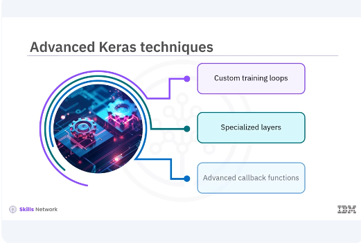
Keras offers a variety of advanced techniques that can significantly enhance your model development process. These techniques include custom training loops, specialized layers, and advanced callback functions.
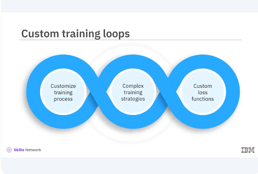
Custom training loops give more control over the training process. While Keras fit method is powerful and convenient, custom training loops allows you to tailor the training process to your specific needs. This can be particularly useful for implementing complex training strategies or custom loss functions.
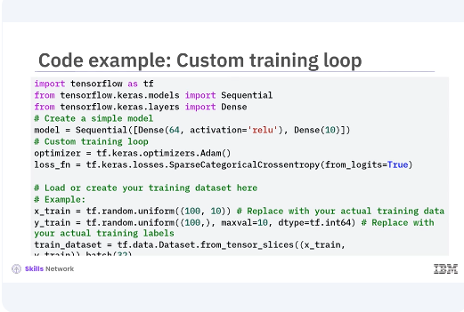
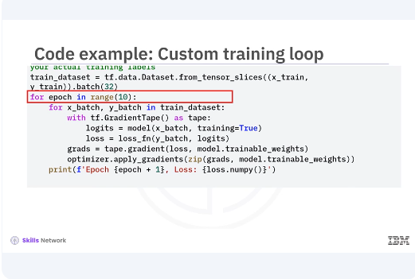
Let's look at a simple example of a custom training loop, you will use a basic neural network in the code. In this example, you define a simple model and create an optimizer and loss function. The training loop iterates over the training dataset for a specified number of epochs. Within each iteration, we use a gradient tape to record operations for automatic differentiation. The gradients are then applied to the models trainable weights. This approach allows for greater flexibility compared to the built-in fit method.
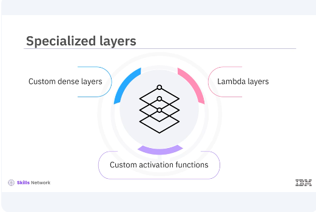
Keras allows you to create specialized layers to extend the functionality of your model, such as custom dense layers and Lambda layers. These layers can implement advanced custom activation functions. This model can be useful for implementing custom layers that aren't available in the standard Keras library.
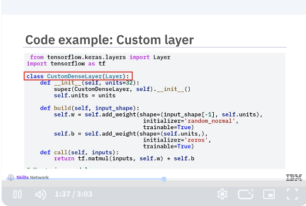
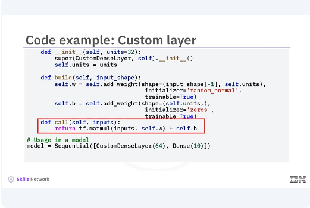
Let's look at an example of a custom dense layer. In this example, you define a custom dense layer by sub classing the layer class. The build method initializes the weights and biases while the call method defines the forward pass. This layer can then be used in a Keras model like any other layer.
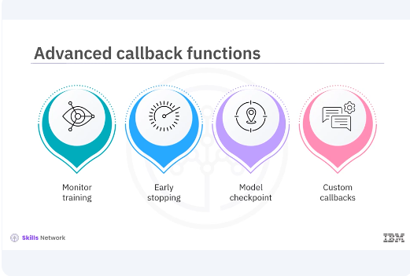
Callback functions in Keras are a powerful tool to customize and extend the behavior of your model training process. They allow you to monitor training, implement early stopping, save model checkpoints, and custom callbacks.
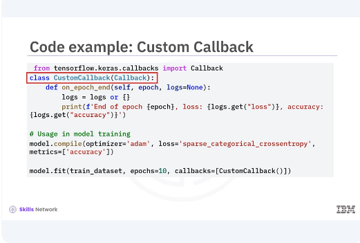
Let's create a custom callback that logs additional metrics during training. In this example, you define a custom callback by sub classing the callback class. The on epoch end method is overridden to print the loss and accuracy at the end of each epoch. This custom callback is then passed to the fit method during model training.
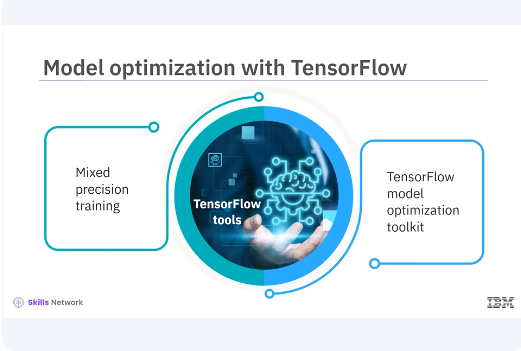
Optimizing your models is crucial for achieving the best performance. TensorFlow offers various tools for model optimization, including mixed precision training, and the TensorFlow model optimization toolkit.
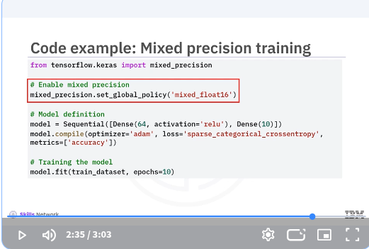
In this example, you enable mixed precision training by setting the global policy to mixed underscore float 16. This allows TensorFlow to use 16 bit floats where possible. Improving performance and reducing memory usage without compromising model accuracy.
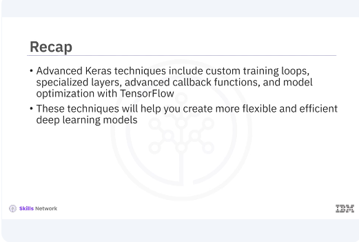
In this video, you learned advanced Keras techniques include custom training loops, specialized layers, advanced callback functions, and model optimization with TensorFlow. These techniques will help you create more flexible and efficient deep learning models.